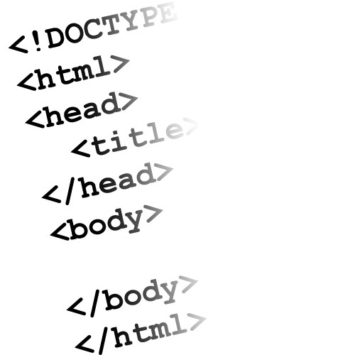
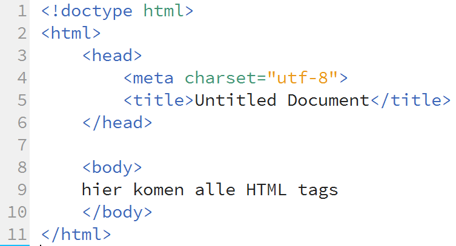

HTML
HTML staat voor Hyper Text Markup Language. HyperText wil zeggen dat de websitecode opgebouwd is uit “tags”. Daarnaast ondersteunt het Hyperlinks. In het Nederlands ook wel koppelingen genoemd. Hier komen we later nog uitgebreid op terug.

Markup Language is vrij vertaald, opmaak taal. Dit is echter achterhaald. De opmaak van je webpagina doe je met CSS. Over CSS gaan we het later uitgebreid hebben. We concentreren ons nu eerst op HTML. HTML is puur voor de structuur van je website. CSS is voor de opmaak en vormgeving.
Zoals gezegd bestaat een HTML pagina uit tags. Met een tag geef je aan wat er met de tekst moet gebeuren. Zo kan je de tekst opdelen in alinea's, tabellen maken, plaatjes toevoegen of een hyperlink (koppeling) maken. Bijna elke HTML tag heeft een begin- en sluittag. Een begintag ziet er als volgt uit: <html>. De opbouw is altijd hetzelfde. Je begint met een kleiner-dan-teken, daarna komt de naam van het HTML element. Vervolgens sluit je de begintag met een groter-dan-teken.
De sluittag is bijna hetzelfde als de begintag. Het enige verschil is dat er na het kleiner-dan-teken een slash staat. In dit geval dus </html>.
Browsers en editors
Dit lesmateriaal is gemaakt in Dreamweaver CC. Dit is onderdeel van het Adobe pakket. Echter is deze editor niet gratis. Er zijn talloze editors te vinden, sommige gratis, sommige betaald. Het programmeren van HTML kan zelfs met Kladblok, echter is dat niet gebruiksvriendelijk.
| Opdracht 1: Editor installeren |
| Zorg dat je een goede editor installeert zodat je deze kan gebruiken tijdens de lessen. Als je het Adobe pakket hebt, kan je Dreamweaver CC gebruiken. Prima gratis alternatieven zijn: Mocht je nog een andere willen gebruiken, ben je daar vrij in. |
Naast een goede editor moet je ook zorgen dat je webbrowsers up to date zijn. De meeste browsers updaten zichzelf automatisch echter doen ze dat niet allemaal. Omdat er verschillende browsers op de markt zijn, moet je als webontwikkelaar al deze browsers testen. Er zitten namelijk verschillen in de verschillende browsers. Dat ga je in de scores van de volgende opdracht terug zien.
| Opdracht 2: browsers installeren |
|
De basis
De HTML code heeft vier "basis" tags. Dit zijn de <html>, <head>, <title> en <body> tags (zie voorbeeld hieronder). Deze tags vormen de basisstructuur van elke pagina.
| Voorbeeld 1-1 |
|  |
Met <!doctype> vertel je een browser hoe deze op je code (website) moet reageren. Het geeft aan in welke versie van HTML je webpagina gemaakt is. Hierover zo meer.
De <html> tag zorgt ervoor dat je browser de site leest als een "html" site. Het is namelijk ook mogelijk om in andere programmeertalen websites te ontwikkelen. Je begint, na de doctype, altijd met het html element. Deze sluit je ook pas weer helemaal aan het einde van je pagina.
In je <head> sectie plaats je de "eigenschappen" van een site zoals links naar een externe stylesheet, of bijv. auteur en beschrijving van jouw website. Daarnaast worden er ook zoekwoorden voor zoekmachines zoals Google en Bing in de head geplaatst. Dit noemen we meta-tags.
Met de <title> tag geef je de website een "titel". Deze zal bovenin de browser staan.
In de <body> sectie komt de content van de website te staan. Dat wil zeggen dat alle tekst wat de bezoeker van de website op zijn scherm ziet, tussen de body elementen komt te staan.
| Let op: |
| Zorg er altijd voor dat je al de tags afsluit. Als je dit niet doet bestaat er een kans dat je website niet juist wordt weergegeven. |
DOCTYPE
Zoals je in Voorbeeld1-1 ziet, staat het doctype nog voor de <html> tags. Als je goed kijkt zie je ook dat doctype geen verplichte tag is. Dit komt omdat deze begint met <!doctype. Dat uitroepteken staat er niet voor niets. Als je dit doet dan wordt je tag commentaar genoemd. De browser ziet je tag wel, leest deze keurig uit maar zal de tag nooit weergeven op het scherm.
Met de <!doctype> bepaal je wat voor soort webpagina je gaat maken. Zoals het in Voorbeeld1-1 staat maak je een HTML5 webpagina. Dit is sinds 2015 de webstandaard. Vroeger had je allerlei variaties van Doctypes, dit is nu gelukkig een stuk verbetert. Het is wel van belang dat de regel er staat zoals hierboven. Zo niet, dan bestaat de mogelijkheid dat de webbrowser de pagina als een HTML4 pagina beschouwd en dus niet (goed) werkt.
| Opdracht 3: Eerste webpagina |
|
HTML bestaat uit een samenhang van begin- en sluittags. Het gebeurd dus ook vaak dat er al een nieuwe openingstag wordt geplaatst, nog voordat de code daarvoor is afgesloten. Kijk maar in onderstaand voorbeeld:
| Voorbeeld 1-2 |
<!doctype html> <body> </html> |
| Opdracht 4: Code opbouw |
Open een nieuwe, lege HTML pagina.
|